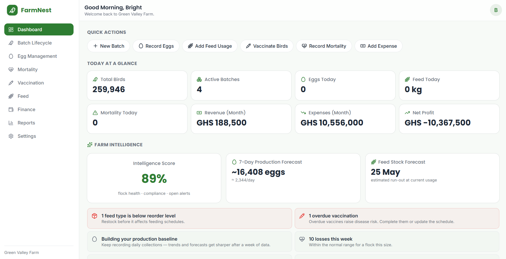
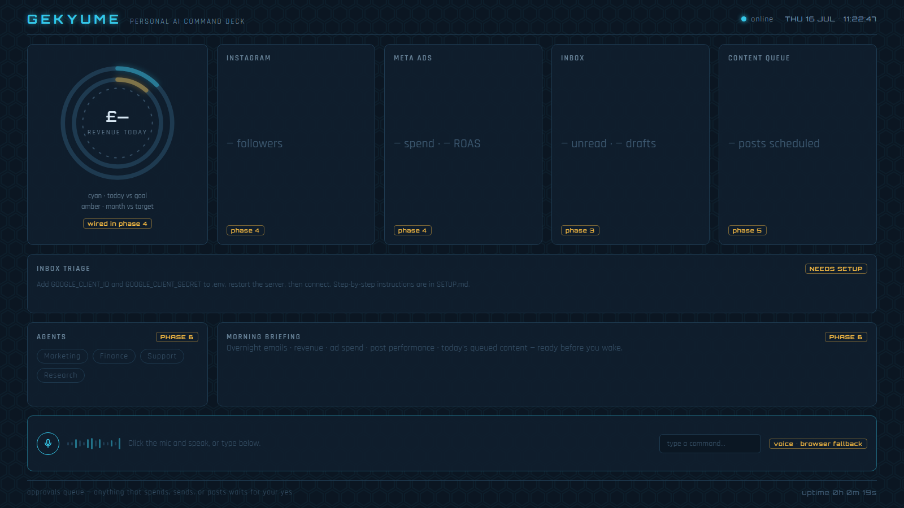

FarmNest
A poultry farm management app that streamlines record-keeping and daily operations for small farms — feed logs, flock records, and expenses in one place, with a clean, accessible UI designed for non-technical users.
Hi, I'm
Computer Network Management student (HND, Level 300) — Koforidua Technical University
"Networking student who builds — from farm apps to AI assistants"
I'm a Level 300 HND student in Computer Network Management at Koforidua Technical University, where I spend my days learning how networks and systems are designed, secured, and kept running.
Outside the classroom, I put that thinking into practice by building real software — from a farm management app used by non-technical poultry farmers to a multi-agent AI assistant dashboard. I love working where infrastructure meets product: tools that are reliable underneath and simple on the surface.

A poultry farm management app that streamlines record-keeping and daily operations for small farms — feed logs, flock records, and expenses in one place, with a clean, accessible UI designed for non-technical users.

A personal AI assistant dashboard with voice interaction, browser automation, and Gmail integration — built on a multi-agent architecture where specialized agents handle tasks and report back to a central HUD.
HND, Computer Network Management — Level 300
Coursework in networking, systems administration, and network security, combined with hands-on lab work and independent software projects.
I'm open to internships, collaborations, and interesting projects. The fastest way to reach me is email — or find me on the platforms below.